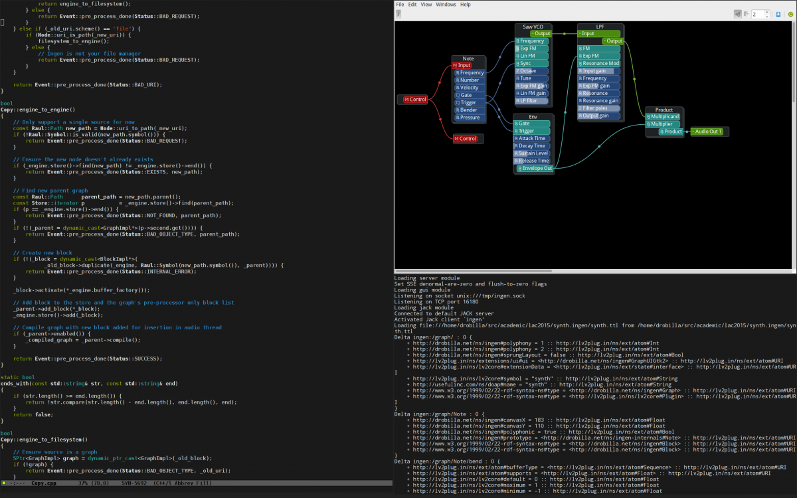
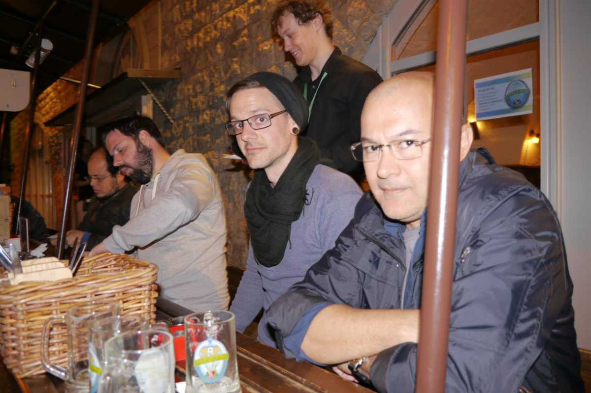

LMP Asks #11: An interview with David Robillard, aka drobilla
This month LMP talked to David Robillard, long time member of the community and author of several FLOSS-projects related to Linux audio. One of David's projects is LV2, the current standard for Linux audio plugins, and the successor of the old standard LADSPA.
Where do you live, and what do you do for a living?
I live in Ottawa, Canada, where I'm currently a PhD student in Computer Science at Carleton University.
Can you tell us a bit about the history of LV2?
LV2 grew out of the limitations of LADSPA. The community was struggling due to lack of a powerful plugin API for creating more advanced plugins (like instruments with GUIs), so LV2 aimed to resolve this situation by starting from LADSPA and adding an extension mechanism so features can be added organically. This idea came from Steve Harris.
I happened to be particularly constrained by LADSPA due to my goal of implementing a powerful modular audio processing environment with standard plugins, so I was interested in this effort. An ecosystem slowly grew around LV2 but a lot of work needed to be done to make it a viable solution: designing new extensions, implementing better host libraries, and so on. For whatever reasons, I ended up getting that job, so these days I do essentially everything related to maintaining LV2 itself.
Can you tell us a bit about any other projects you are involved in?
My pet project is Ingen, a modular audio environment for LV2 plugins that is itself an LV2 plugin. In development terms, I use Ingen as a motivating case for designing a truly powerful plugin API.
In user terms, Ingen is, as usual, scratching a personal itch. I like modular synthesis, but the existing options weren't very appealing to me. Pd is powerful, but too low level and polyphony is annoying. AMS doesn't have subpatches, and the implementation is a lost cause. I thought it was unfortunate that these systems used internals, making their modules unusable in other programs. I also wished for a modular that could be both a high level modular synth ala AMS, and a powerful programming environment ala Pd when necessary. Thus, Ingen was born, along with my interest in, and eventual leadership of, LV2.
I am also a contributor to Ardour (and the original author of Ardour's MIDI support), author of the relatively popular Jack patchbay, Patchage, and have ported several plugin sets to LV2.

drobilla hard at work with Ingen.
What is your musical background?
I am originally a guitar player. I also play hand percussion and can find my way around various other instruments with varying degrees of competence.
There is a fine line between music and noise, but I enjoy creative sonic experimentation, whatever that may be. Some things in the world sound quite nice if you smash them with a mallet, and sound even better if you ram that through a bunch of analog gear with a few too many knobs turned up to eleven. Years ago, I was very much an instrumental purist, but these days I appreciate many forms of electronic music; sometimes it's more fun to let a step sequencer roll and play the knobs.
What is your typical workflow when making music?
I am unfortunately too busy trying to find enough time to write software to make music, to say nothing of actually making music. It's a curse. I have a guitar nearby and a desk full of analog gear for tinkering when I feel like doing something other than programming. Like many, I tell myself that, one day, I will actually use this stuff to produce something, but in reality that is unlikely to ever happen.
I like building things, and tinkering with them. Playing/tinkering live has always been more of an interest to me than producing lasting music, though I do wish I had hit the record button more often to capture the great moments.
Tell us a bit about your hardware set up.
I use an unremarkable laptop connected to a very large external display, and ergonomic mechanical keyboard (currently a Kinesis Advantage). Currently, audio is handled by an old Edirol FA-101 via a TI ExpressCard Firewire interface. This is the only configuration I've managed to find that achieves respectablly low latency with Jack on a laptop.
I do not like piano keyboards (or key biased controllers in general), so I use a C-Thru Axis 49 hexagonal keyboard and a Soundplane for playing notes. My guitar is a Godin LGX-SA which also has MIDI capability. Percussion is handled with a cheap Korg nanoPad2, but I have plans to build a large grid controller for dual use as a melodic and percussive controller, as well as a sequencing grid. My “analog” desk hosts a rotating contingent of toys, currently some Moogerfoogers, a Moog Minitaur, three Korg Volcas, and various effects pedals.
What is your history with Linux?
I have been using GNU/Linux exclusively for about 10 years now. One day when I was still in high school my Windows 95 drive died, I realized I didn't miss it, and the rest is history.

drobilla (and Rui!) at LAC2015.
Why do you feel open source is important, and what for you is the most important aspect of Linux audio?
It is extremely important for users to be able to control their own computers. As a developer I can not stand the concept of not being able to fix something that is broken, and do not trust proprietary software in general. I also feel that creative people must control their own tools to truly be in control of their creative process. Community is important in general; I prefer my software to come from inspired people with names rather than faceless corporations who care about nothing but profit.
I am not particularly attached to Linux, the “L” in LAD (Linux Audio Developers) stands for “libre” as far as I am concerned. The most important aspect of Linux audio is freedom.
What do you feel is currently lacking in Linux audio?
Powerful sequencers, instruments, and the necessary tools for making electronic music in general.
What is your favourite FLOSS plugin?
Ingen, naturally :)
Are there any FLOSS projects that you are excited about at the moment?
The upcoming Ardour release (Ardour 4 at the time of interview, editors remark) is dramatically improved in many ways, particularly with respect to MIDI. I think this is an important step towards FLOSS software being competitive for audio production. There is still a lot of work to be done, but Ardour is making great progress.
Naturally I am excited about Ingen and LV2 in general, but for more esoteric reasons.
What changes, if any, would you like to see within the Linux Audio community?
Lack of useful feedback is a big problem for developers. Some projects do better at this than others. Really, though, our biggest problem is time. We need more developers with more time to work on things. This probably means we need more developers actually being paid to do so. I hate to reduce everything to such mundane terms, but it really boils down to that. No amount of theorizing about community improvements will ever compensate for the severe lack of developer time we have available.
What advise would you give to a new Linux Audio user?
Don't ask me for advise :)